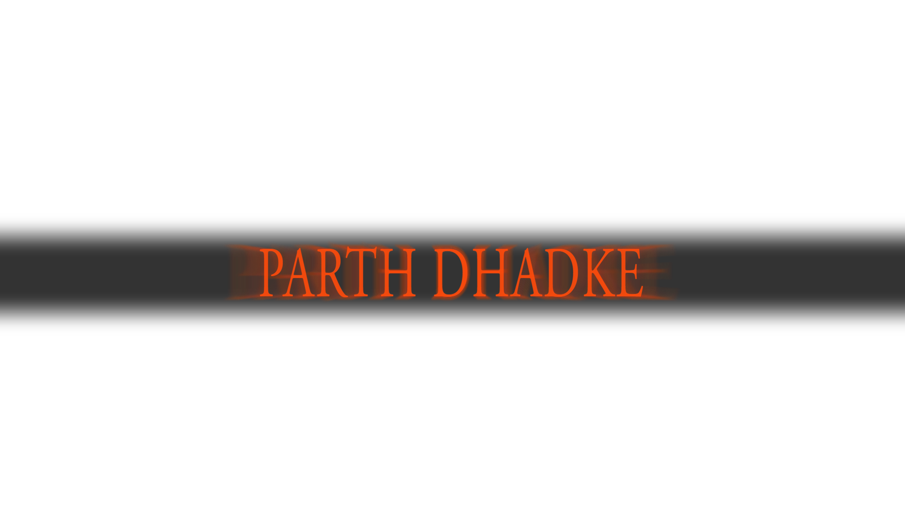

B.Tech Computer Science Data Science
I am a B.Tech CSDS 311 (2nd Year) student passionate about software development, data analysis, and data science. Proficient in MySQL and Python, I develop data-driven solutions and optimize software performance. Skilled in Tableau and Excel, I specialize in data visualization and analysis, transforming complex data into actionable insights. Continuously exploring new technologies, I strive to create impactful solutions that bridge data and decision-making in software development and data science.
Download Resume
Gained expertise in data analytics, data science methodologies, and IBM Watson Studio for data visualization.
View CertificateCreated impactful visualizations for Tata Consultancy Services, aiding executive decision-making.
View CertificateI collaborated with the Afroz Shah Foundation on various projects aimed at environmental conservation and sustainability. I participated in beach cleanups, collected both dry and wet waste in Powai’s slum areas, and helped address pollution in the heavily affected Mithi River by tackling improper waste disposal along its banks. In addition to these cleanup efforts, I engaged with local communities to educate residents on effective waste management and the benefits of a clean environment. My work was focused on raising awareness and promoting sustainable practices that drive lasting environmental change.